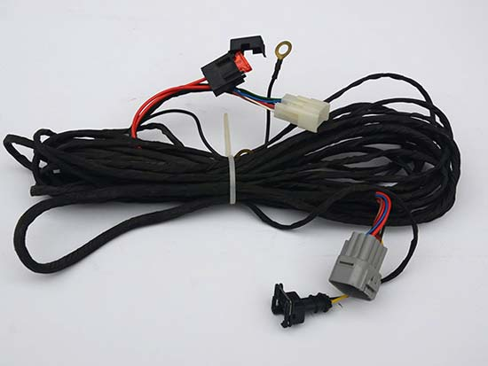
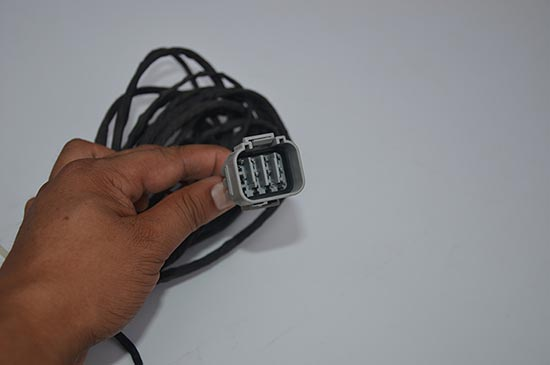
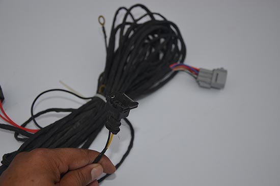
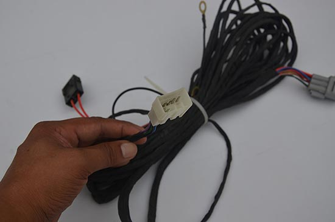

产品结构的名称与材料
(1) 导线：产品进行电流或电磁波信息传输功能的最基本的必不可少的主要构件。
主要材料：导线是导电线芯的简称，用铜、铝、铜包钢、铜包铝等导电性能优良的有色金属制成，以光导纤维作为导线。
有裸铜线、镀锡线;单支线、绞线;绞后镀锡线。

(2) 绝缘层：是包覆在导线外围四周起着电气绝缘作用的构件。即能确保传输的电流或电磁波、光波只沿着导线行进而不流向外面，导体上具有的电位(即对周围物体形成的电位差、即电压)能被隔绝，即既要保证导线的正常传输功能，又要确保外界物体和人身的安全。 导线与绝缘层是构成线缆产品(裸电线类除外)必须具备的两个基本构件。
主要材料：PVC、PE、XLPE、聚丙烯PP、氟塑料F，橡胶，纸，云母带

(3) 填充结构：很多电线电缆产品是多芯的，将这些绝缘线芯或线对成缆(或分组多次成缆)后，一是外形不圆整，二是绝缘线芯间留有很大空隙，因此必须在成缆时加入填充结构，填充结构是为了使成缆外径相对圆整以利于包带、挤护套。
主要材料：PP绳

(4)屏蔽：是一种将电缆产品中的电磁场与外界的电磁场进行隔离的构件;有的线缆产品在其内部不同线对(或线组)之间也需要相互隔离。可以说屏蔽层是一种“电磁隔离屏”。高压电缆的导体屏蔽和绝缘屏蔽是为了均化电场的分布。
主要材料：裸铜线、铜包钢线、镀锡铜线

(5)护层：当电线电缆产品安装运行在各种不同的环境中时，必须具有对产品整体，特别是对绝缘层起保护作用的构件，这就是护层。
因为要求绝缘材料具有优良的各种电绝缘性能，则必须要求材料的纯度极高、杂质含量极微;往往无法兼顾其对外界的保护能力，所以对于外界(即安装、使用场合和使用中的)各种机械力的承受或抵抗力、耐大气环境、耐化学药品或油类、对生物侵害的防止，以及减少火灾的危害等都必须由各种护层结构来承担。